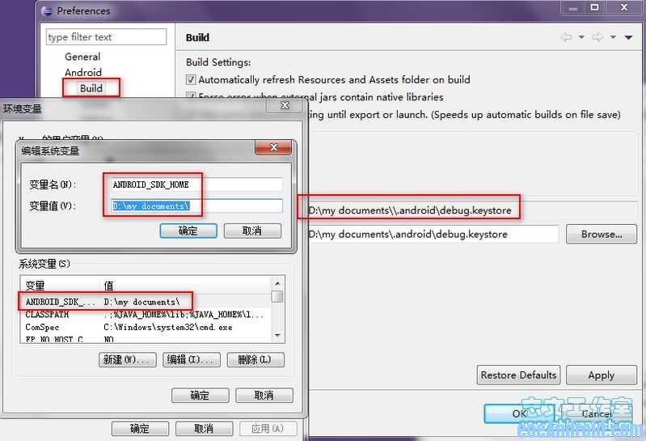

更改Android AVD模拟器创建路径位置的方法
使用eclipse创建的android AVD模拟器，默认位置一般在用户文件夹下的。Android文件夹中，并且路径不可有中文。而用户文件夹一般都在系统盘，所以当创建的模拟器过多并且占用空间过大时，自然免不了导致系统盘空间紧张。那么如何修改移动AVD创建的默认位置呢？方法参考如下。
打开：计算机-->系统属性-->环境变量—>在“系统变量”那选择“新建”-->变量名为 "ANDROID_SDK_HOME” (注意，必须为这个名字！)，然后把变量值改为你想把AVD所在的".android”文件夹放置的位置（如：D:\my documents）。
然后我们重启Eclipse，在Eclipse里可以看到：
preferneces ---> Android ----> Build Setting ----> Default debug keystore: D:\my documents\\.android\debug.keystore
即表明修改生效。

注意：如果你之前已经创建过avd模拟器，请把在当前用户下的.android文件夹删除，然后重新启动eclipse创建。或者剪切该文件夹到你设置的位置，并更改android**.ini文件里的路径为复制后的路径。
当然，你也可以用cmd命令来自定义创建AVD模拟器，此处不作过多论述。